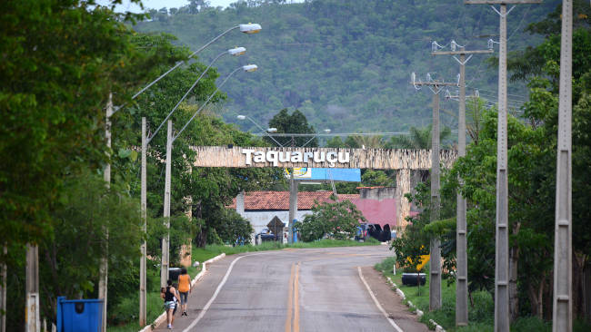

Taquaruçu é um distrito localizado a aproximadamente 30 quilômetros da cidade de Palmas, capital do Tocantins.
A região é conhecida pela grande quantidade de cachoeiras, pelas trilhas e pelo contato direto com a natureza.
Além das atrações naturais, Taquaruçu também promove eventos culturais e esportivos que atraem visitantes de diferentes regiões do país.
Taquaruçu possui dezenas de cachoeiras catalogadas, tornando-se um dos principais destinos turísticos próximos à capital do estado.
Visitar a página inicial